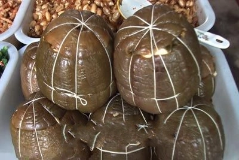
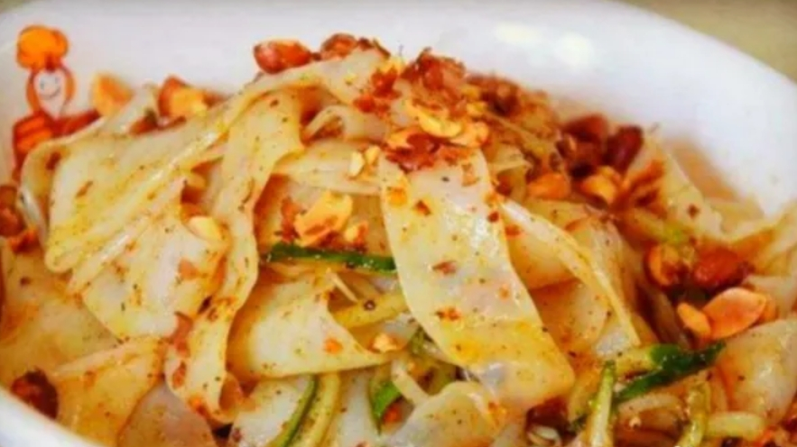
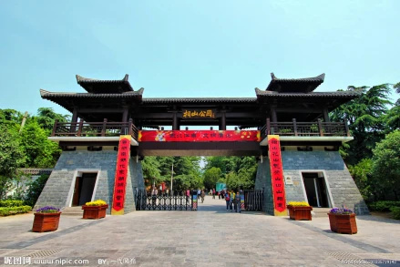

More Local Delicacies
Explore the diverse culinary landscape of Huaibei through its most beloved dishes

Huaibei Hand-Pulled Noodles
Thick, chewy noodles served in a rich, aromatic broth with tender beef slices, fresh vegetables, and a variety of condiments. A comforting meal enjoyed by locals at any time of day.

Pan-Fried Dumplings
Crispy-bottomed dumplings filled with seasoned pork and vegetables. These golden parcels are a popular breakfast item and snack, best enjoyed fresh from the pan with a soy-vinegar dipping sauce.

Sweet Sticky Rice Balls
Soft, glutinous rice balls filled with sweet sesame or red bean paste, traditionally enjoyed during festivals and celebrations. Their round shape symbolizes family unity and happiness.

Traditional Braised Dishes
Slow-cooked meats and vegetables in a rich soy-based sauce with star anise, cinnamon, and other aromatic spices. These deeply flavorful dishes are the cornerstone of Huaibei home cooking.